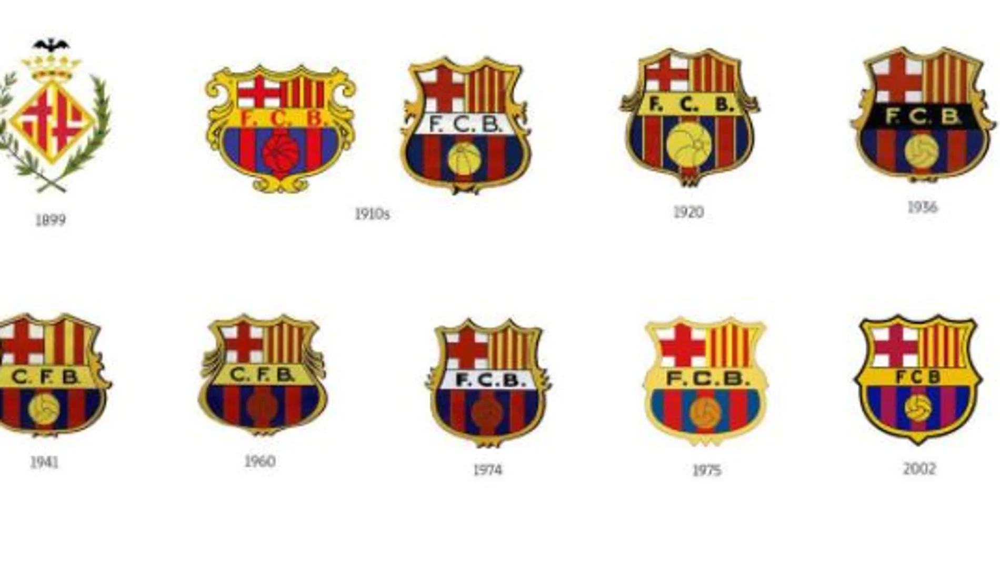
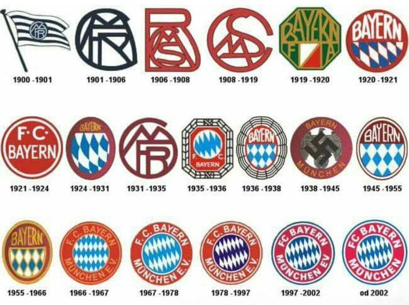
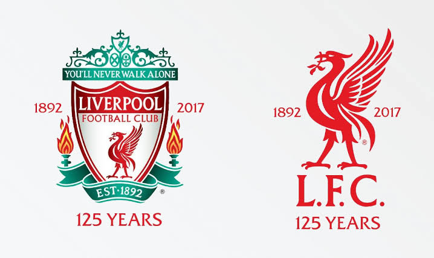
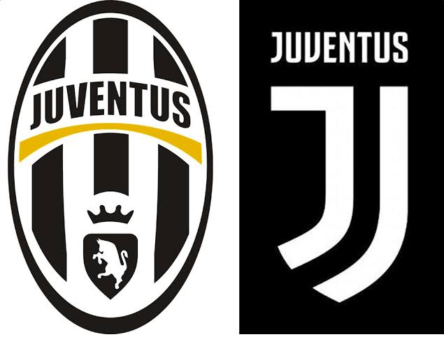

Los clubes más grandes de Europa
El fútbol europeo ha sido testigo del surgimiento de grandes clubes que han marcado la historia del deporte a nivel mundial. Estos equipos no solo destacan por sus títulos, sino también por su impacto cultural, su base de aficionados global y su capacidad para atraer a los mejores jugadores del planeta en cada época.
Real Madrid — El rey de Europa
El Real Madrid es el club más laureado de la historia de la UEFA Champions League con 15 títulos europeos en su palmarés. Fundado en 1902, el conjunto blanco ha sido el hogar de las mejores estrellas del fútbol mundial, desde Alfredo Di Stéfano y Ferenc Puskás hasta Cristiano Ronaldo y actualmente Kylian Mbappé.
Con más de 35 títulos de Liga española y una hinchada que se extiende por todos los rincones del planeta, el Real Madrid es reconocido por la FIFA como el mejor club del siglo XX y sigue siendo la referencia máxima del fútbol mundial. eh aqui los diferentes escudos con los que se ha representado a lo largo de su historia.

FC Barcelona — Más que un club
El FC Barcelona, fundado en 1899, es uno de los clubes más influyentes del mundo tanto dentro como fuera del terreno de juego. Con su famoso lema Más que un club, el Barça representa los valores del catalanismo y ha sido el hogar de los mejores jugadores de su generación, incluyendo a Ronaldinho, Messi y Xavi Hernández.
Con 5 Champions League y 27 títulos de LaLiga, el Barcelona es uno de los equipos con más seguidores en el mundo y un sinónimo del fútbol de toque y posesión que ha revolucionado el juego moderno.

Bayern Munich — El gigante alemán
El Bayern Munich es el club más exitoso de Alemania y uno de los más grandes de Europa. Fundado en 1900, el conjunto bávaro ha ganado 6 Champions League y más de 32 títulos de Bundesliga, consolidándose como una potencia absoluta del fútbol continental temporada tras temporada.
Su modelo de gestión deportiva y económica es considerado uno de los más exitosos del mundo, combinando la formación de talentos locales con la incorporación de las mejores estrellas internacionales del mercado.

Liverpool FC — La leyenda inglesa

El Liverpool es uno de los clubes más históricos de Inglaterra con 6 Champions League. Su estadio Anfield y su canción You'll Never Walk Alone son símbolos reconocidos en todo el mundo.
Su estadio Anfield, ubicado en la ciudad de Liverpool, es considerado uno de los recintos más intimidantes del fútbol mundial. La famosa curva The Kop, donde se ubican los aficionados más apasionados del club, genera una atmósfera única que ha hecho temblar a los mejores equipos de Europa durante décadas.
Juventus — La Vecchia Signora

La Juventus de Turín es el club más laureado de Italia con más de 36 títulos de Serie A. Conocida como la Vecchia Signora, ha sido el hogar de leyendas como Michel Platini, Zinedine Zidane y Cristiano Ronaldo.
Su famoso estadio Juventus Stadium, inaugurado en 2011, fue el primer estadio moderno construido específicamente para un club italiano y es considerado uno de los recintos más modernos y cómodos de Europa.
AC Milan — Los rossoneri

El AC Milan es uno de los clubes más ganadores de Europa con 7 Champions League. En los años 80 y 90 dominó el fútbol continental con figuras como Marco van Basten, Ruud Gullit y Paolo Maldini.
Manchester United — El teatro de los sueños

El Manchester United es el club inglés más exitoso con 3 Champions League y 20 títulos de Premier League. Old Trafford, su estadio, es conocido como el Teatro de los Sueños y La hinchada del Manchester United es una de las más grandes y apasionadas del mundo, con seguidores en todos los continentes que llenan Old Trafford en cada partido y siguen al equipo a todos los estadios de Europa..